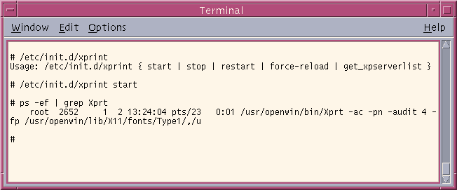
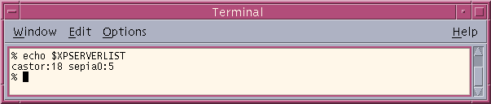
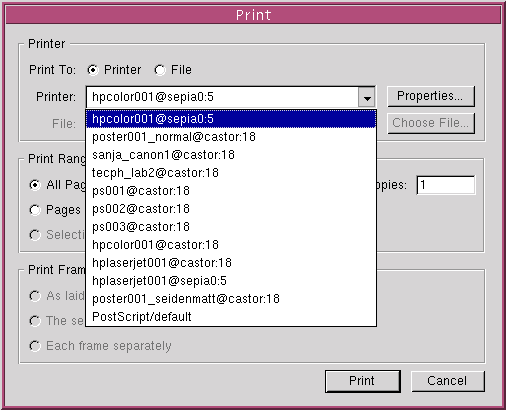
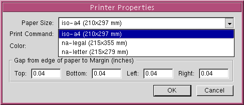

You are currently viewing a snapshot of www.mozilla.org taken on April 21, 2008. Most of this content is
highly out of date (some pages haven't been updated since the project began in 1998) and exists for historical purposes only. If
there are any pages on this archive site that you think should be added back to www.mozilla.org, please file a bug.
Skip to main content
Xprint usage in Mozilla
- Optional:
Start Xprint server ("Xprt") if there is none running yet:

Notes:
-
This step is only required when you do not have a Xprint server
running yet (xprint.mozdev.org
has RPM and
Debian packages which
will do that automagically, just reboot after an installation
:-)).
-
/etc/init.d/xprint start
is usually executed at system startup time
(if Xprint is started as per-machine service daemon) and/or as
part of the users ~/.profile
(if Xprint should run per-user (note that you can mix both modes
and even employ remote Xprint servers - just put them all into
$XPSERVERLIST :))
-
/etc/init.d/xprint start can be used as plain user,
too (e.g. non-root), however the started Xprint server is
only available to that user.
- Optional:
Make sure
$XPSERVERLIST env var is correctly set:

Notes:
- Start Mozilla and load the page you want to print!
- Open the print dialog (Menu
File/Print...) and
select the printer you want to use:

Notes:
-
Example above shows printers from three diffent sources:
Two Xprint servers (castor:18 and
sepia0:5 and one PostScript module printer
("PostScript/default") at the bottom of the list.
-
The default printer for this user is always being moved at the top of the list.
This can be changed by setting the $PDPRINTER,
$LPDEST and/or $PRINTER env vars
(they are searched in that order).
-
Printers which start with
PostScript/ are
no Xprint-based printers. That are printers from
the old PostScript module.
Xprint-based printers always have an '@'-sign
in the middle of the name.
-
If no Xprint-based printers show-up then check...
- ... if
$XPSERVERLIST is set
-
... if the Xprint server(s) referenced by
$XPSERVERLIST
are running and accessible (remote Xprt may usually be
access-restricted)
-
Consult the FAQ!
- Optional:
Open the print properties dialog
(click on the
Properties...-button) and
select the job attributes (paper size, color space etc)
you want to use...

Notes:
- The properties dialog will only offer paper sizes
for Xprint-based printers, e.g. you can't print using
a paper size which is not supported/allowed for this
printer.
-
Do not worry that there may be a lack of paper sizes (only
the example above shows that a restriction is possible;
the default configuration
("PSdefault") comes with
many
many paper sizes and you can configure as many paper sizes
as you want, too.
-
Setting the spooler command in the dialog is not supported by
the Xprint module (the "
Print Command:" input
widget is disabled for Xprint-module-based printers)
Remember that the default spooler command is heavily
platform-specific and therefore the server side configuration is
responsible to define this.
You can setup the spooler command in the
model-config or override it in
$XPCONFIGDIR/C/print/attributes/printer either
for all printers, per-printer or per-model etc.)).
Alternatively you can simply print to file...
-
Print!
(e.g. hit the "Print..."-button)
-
Enjoy the results
:-)
Notes:
{kind=link}